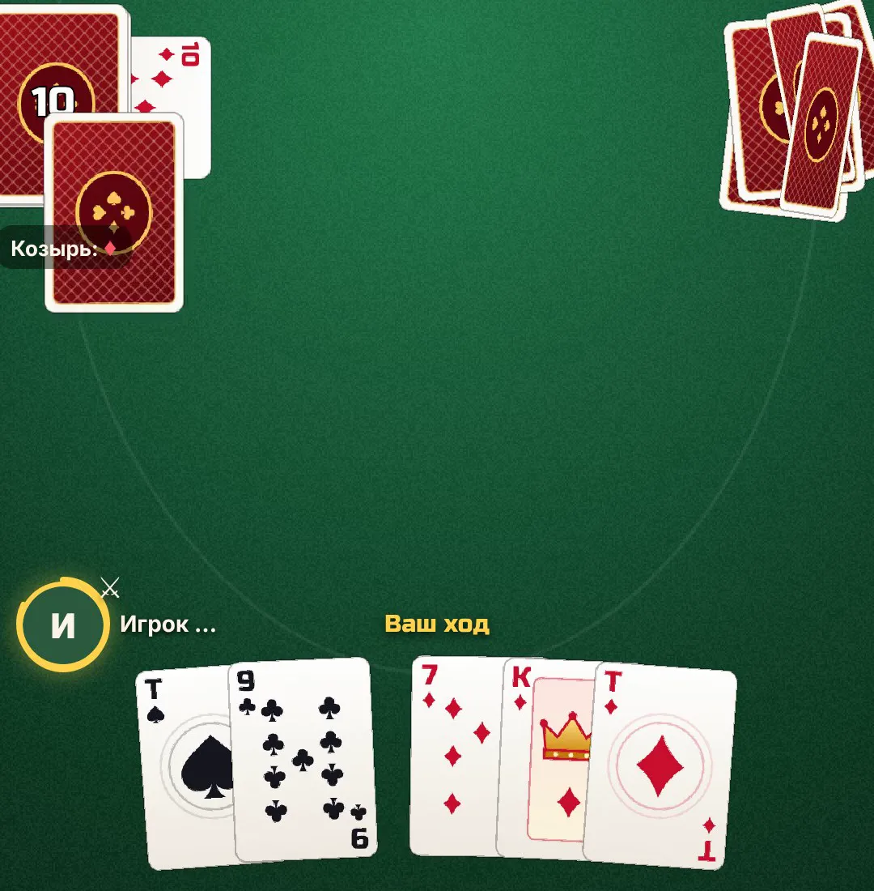
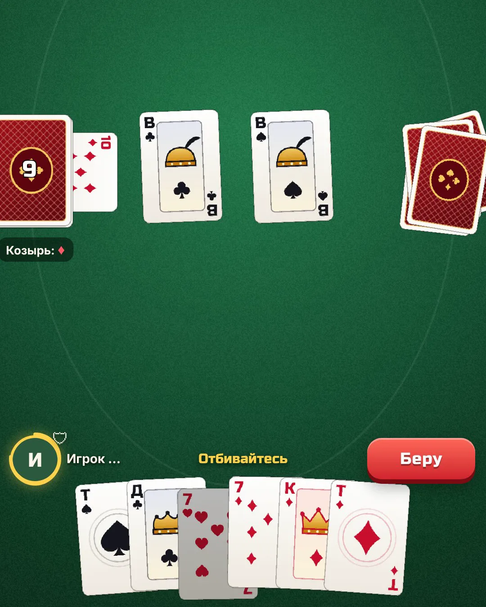

Дурак онлайн — играть с другом бесплатно
Классический подкидной дурак — как за кухонным столом, только соперники могут быть в другом городе.
Бесплатно · без регистрации · без всплывающей рекламы

Об игре
Об игре «Дурак онлайн»
Играйте в подкидного с живыми людьми: соперник 1 на 1 подбирается сам. Хотите с друзьями — соберите стол по коду до четырёх игроков, а пустые места займёт компьютер.
Если хочется сыграть одному, выберите игру с компьютером: три уровня, от спокойного до хитрого соперника, который помнит вышедшие карты.
Особенности
Что есть в игре
- Подкидной дурак на 2–4 игроков
- Онлайн 1 на 1 — быстрый подбор соперника
- Стол с друзьями по коду
- Игра с компьютером: 3 уровня
- Быстрые фразы за столом и кнопка «Ещё раз»
- Рейтинг игроков
- Без всплывающей рекламы

Правила
Коротко о правилах подкидного
- Колода 36 карт, каждому раздают по 6. Последняя карта колоды открывает козырь.
- Первым ходит игрок с младшим козырем. Отбиваться нужно старшей картой той же масти или козырем.
- Остальные игроки могут подкидывать карты того же достоинства, что уже лежат на столе.
- Не можете отбиться — берёте все карты. После хода все добирают до шести.
- Кто остался с картами последним, тот и «дурак».
Играть
Как начать играть
- Нажмите «Играть во ВКонтакте» — игра откроется в приложении или браузере.
- Выберите: онлайн, стол с друзьями или игра с компьютером.
- Играйте на компьютере или телефоне — регистрация не нужна.
Частые вопросы
Можно сыграть с другом?
Да: создайте стол, отправьте другу код — до четырёх игроков, пустые места займёт компьютер.
Это переводной или подкидной дурак?
Подкидной — самый популярный вариант.
Есть ли реклама?
Только баннер внизу экрана и по желанию реклама за награду. Ничего не всплывает само.
Во что ещё сыграть вдвоём?
Морской бой онлайн — тоже с комнатой для друга.
Другие игры и программы
Лесная гостиница — логическая головоломка во ВКонтакте«Лесная гостиница» во ВКонтакте: расселите зверят по комнатам так, чтобы исполнились все пожелания. Бесконечны…Морской бой онлайн с другом — играть бесплатно, без регистрацииМорской бой онлайн прямо в браузере: с другом по ссылке, с живым соперником или с компьютером. Без регистрации…Падающие шарики — игра во ВКонтакте: слияние шариков«Падающие шарики» во ВКонтакте: роняйте шарики в банку, одинаковые сливаются в шарик побольше. 11 размеров — о…Почта на опушке — уютная головоломка во ВКонтакте«Почта на опушке» во ВКонтакте: разносите письма зверятам по приметам домиков, стройте деревню, собирайте 48 м…Прыжок кометы — аркада во ВКонтакте: с орбиты на орбиту«Прыжок кометы» во ВКонтакте: одним касанием перепрыгивайте с орбиты на орбиту, собирайте звёзды и открывайте …Сортировка шариков по пробиркам — головоломка во ВКонтакте«Сортировка шариков» во ВКонтакте: разложите цветные шарики по пробиркам. Сотни уровней от 3 до 12 цветов, каж…Тетрис онлайн во ВКонтакте — играть бесплатноКлассический Тетрис во ВКонтакте: собирайте линии из падающих фигур, тень падения, запас фигуры и три следующи…Уютный остров — спокойная игра-огород во ВКонтакте«Уютный остров» во ВКонтакте: свой 3D-остров, огород, котик, находки на берегу, путешествия на лодке и обмен с…Защита башен — Tower Defense во ВКонтакте: 60 уровней«Защита башен» во ВКонтакте: 5 башен, 8 видов врагов, 60 уровней в 6 мирах и общий чат. Пиксельная Tower Defen…